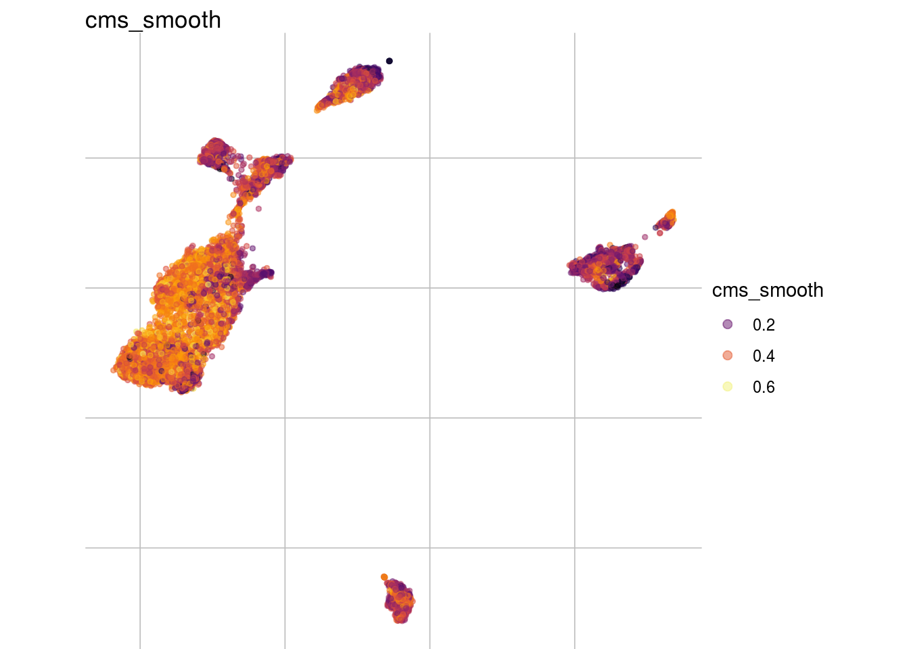

Characterize batch effects
Almut Lütge
19 April, 2020
pbmc_roche
suppressPackageStartupMessages({
library(CellBench)
library(scater)
library(CellMixS)
library(variancePartition)
library(purrr)
library(jcolors)
library(here)
library(tidyr)
library(dplyr)
library(stringr)
library(ComplexHeatmap)
#library(ggtern)
library(gridExtra)
library(scran)
library(cowplot)
library(CAMERA)
library(ggrepel)
library(readr)
})
options(bitmapType='cairo')Dataset and parameter
sce <- readRDS(params$data)
param <- readRDS(params$param)
celltype <- param[["celltype"]]
batch <- param[["batch"]]
sample <- param[["sample"]]
dataset_name <- param[["dataset_name"]]
dataset_name## [1] "pbmc_roche"n_genes <- nrow(sce)
table(colData(sce)[,celltype])##
## 0 1 2 3 4 5 6 7 8
## 3243 2396 1197 1035 677 674 606 223 45table(colData(sce)[,batch])##
## CS10 DMSO fresh PSC
## 2044 3095 3199 1758res_de <- readRDS(params$de)
abund <- readRDS(params$abund)
outputfile <- params$out_file
cols <-c(c(jcolors('pal6'),jcolors('pal8'))[c(1,8,14,5,2:4,6,7,9:13,15:20)],jcolors('pal4'))
names(cols) <- c()Visualize data
How are sample, celltypes and batches distributed within normalized, but not batch corrected data?
feature_list <- c(batch, celltype, sample)
feature_list <- feature_list[which(!is.na(feature_list))]
lapply(feature_list, function(feature_name){
visGroup(sce, feature_name, dim_red= "UMAP")
})## [[1]]##
## [[2]]##
## [[3]]Batch strength/size
To compare or describe the severity of a batch effect there are different meassures. In general they can either give an estimate of the relative strength compared to the signal of interest e.g. the celltype signal or an absolut estimate e.g. the number of batch affected genes.
Variance partitioning
How much of the variance within the datasets can we attributed to the batch effect and how much could be explained by the celltype? Which genes are mostly affected?
vp_vars <- c("vp_batch", "vp_celltype", "vp_residuals")
vp <- as_tibble(rowData(sce)[, vp_vars]) %>% dplyr::mutate(gene= rownames(sce)) %>% dplyr::arrange(-vp_batch)
vp_sub <- vp[1:3] %>% set_rownames(vp$gene)## Warning: Setting row names on a tibble is deprecated.#plot
plotPercentBars( vp_sub[1:10,] )
plotVarPart( vp_sub )
Variance and gene expression
Are general expression and batch effect related? Does the batch effect or the celltype effect preferable manifest within highly, medium or low expressed genes?
#define expression classes by mean expression quantiles
th <- quantile(rowMeans(assays(sce)$logcounts), c(.33, .66))
high_th <- th[2]
mid_th <- th[1]
rowData(sce)$expr_class <- ifelse(rowMeans(assays(sce)$logcounts) > high_th, "high",
ifelse(rowMeans(assays(sce)$logcounts) <= high_th &
rowMeans(assays(sce)$logcounts) > mid_th,
"medium", "low"))
rowData(sce)$mean_expr <- rowMeans(assays(sce)$logcounts)
#plot
plot_dev <- function(var, var_col){
ggplot(as.data.frame(rowData(sce)), aes_string(x = "mean_expr", y = var, colour = var_col)) +
geom_point() +
geom_smooth(method = "lm", se = FALSE)
}
#Ternary plots
# ggtern(data=as.data.frame(rowData(sce)),aes(vp_batch, vp_celltype, vp_residuals)) +
# stat_density_tern(aes(fill=..level.., alpha=..level..),geom='polygon') +
# scale_fill_gradient2(high = "red") +
# guides(color = "none", fill = "none", alpha = "none") +
# geom_point(size= 0.1, alpha = 0.5) +
# Llab("batch") +
# Tlab("celltype") +
# Rlab("other") +
# theme_bw()
#
# t1 <- ggtern(data=as.data.frame(rowData(sce)),aes(vp_batch, vp_celltype, vp_residuals)) +
# geom_point(size = 0.1) +
# geom_density_tern() +
# Llab("batch") +
# Tlab("celltype") +
# Rlab("other") +
# theme_bw()
## Summarize variance partitioning
# How many genes have a variance component affected by batch with > 1%
n_batch_gene <- vp_sub %>% dplyr::filter(vp_batch > 0.01) %>% nrow()/n_genes
n_batch_gene10 <- vp_sub %>% dplyr::filter(vp_batch > 0.1) %>% nrow()/n_genes
n_celltype_gene <- vp_sub %>% dplyr::filter(vp_celltype> 0.01) %>% nrow()/n_genes
n_rel <- n_batch_gene/n_celltype_gene
# Mean variance that is explained by the batch effect/celltype
m_batch <- mean(vp_sub$vp_batch, na.rm = TRUE)
m_celltype <- mean(vp_sub$vp_celltype, na.rm = TRUE)
m_rel <- m_batch/m_celltypeScatterplot batch
plot_dev("vp_batch", "vp_batch")## `geom_smooth()` using formula 'y ~ x'Scatterplot celltype
plot_dev("vp_celltype", "vp_celltype")## `geom_smooth()` using formula 'y ~ x'Ternary plot all genes
#t1Ternary plot gene expression classes
#t1 + facet_grid(~expr_class)Cellspecific Mixing score
Overall
#visualize overall cms score
visHist(sce, n_col = 2, prefix = FALSE)visMetric(sce, metric = "cms_smooth", dim_red = "UMAP")
visGroup(sce, celltype, dim_red = "UMAP")
#summarize
mean_cms <- mean(sce$cms)
n_cms_0.01 <- length(which(sce$cms < 0.01))
cluster_mean_cms <- as_tibble(colData(sce)) %>% group_by_at(celltype) %>% summarize(cms_mean = mean(cms))
var_cms <- var(cluster_mean_cms$cms_mean)Celltypes cms smooth
#compare by celltypes
visCluster(sce, metric_var = "cms_smooth", cluster_var = celltype)## Picking joint bandwidth of 0.0266
visCluster(sce, metric_var = "cms_smooth", cluster_var = celltype, violin = TRUE)
Celltypes histogram
#compare histogram by celltype
p <- ggplot(as.data.frame(colData(sce)),
aes_string(x = "cms", fill = celltype)) +
geom_histogram() +
facet_wrap(celltype, scales = "free_y", ncol = 3) +
scale_fill_manual(values = cols) +
theme_classic()
p + geom_vline(aes_string(xintercept = "cms_mean",
colour = celltype),
cluster_mean_cms, linetype=2) +
scale_color_manual(values = cols) ## `stat_bin()` using `bins = 30`. Pick better value with `binwidth`.
Celltype specificity
Celltype abundance
meta_tib <- as_tibble(colData(sce)) %>% group_by_at(c(batch, celltype)) %>% summarize(n = n()) %>% dplyr::mutate(cell_freq = n / sum(n))
plot_abundance <- function(cluster_var, tib, x_var){
meta_df <- as.data.frame(eval(tib))
p <- ggplot(data=meta_df, aes_string(x=x_var, y="cell_freq", fill = cluster_var)) +
geom_bar(stat="identity") + scale_fill_manual(values=cols, name = "celltype")
p + coord_flip() + theme_minimal()
}
plot_abundance(cluster_var = celltype, tib = meta_tib, x_var = batch)
#summarize diff abundance
mean_rel_abund_diff <- mean(unlist(abund))
min_rel_abund_diff <- min(unlist(abund))
max_rel_abund_diff <- max(unlist(abund))Batch and celltype specific count distributions
Do the overall count distribution vary between batches? Are count distributions celltype depended
#batch level
bids <- levels(as.factor(colData(sce)[, batch]))
names(bids) <- bids
cids <- levels(as.factor(colData(sce)[, celltype]))
names(cids) <- cids
#mean gene expression by batch and cluster
mean_list <- lapply(bids, function(batch_var){
mean_cluster <- lapply(cids, function(cluster_var){
counts_sc <- as.matrix(logcounts(
sce[, colData(sce)[, batch] %in% batch_var &
colData(sce)[, celltype] %in% cluster_var]))
})
mean_c <- mean_cluster %>% map(rowMeans) %>% bind_rows %>%
dplyr::mutate(gene=rownames(sce)) %>%
gather(cluster, logcounts, cids)
})## Note: Using an external vector in selections is ambiguous.
## ℹ Use `all_of(cids)` instead of `cids` to silence this message.
## ℹ See <https://tidyselect.r-lib.org/reference/faq-external-vector.html>.
## This message is displayed once per session.mean_expr <- mean_list %>% bind_rows(.id= "batch")
ggplot(mean_expr, aes(x=logcounts, colour=batch)) + geom_density(alpha=.3) +
theme_classic() +
facet_wrap( ~ cluster, ncol = 3) +
scale_colour_manual(values = cols) +
scale_x_continuous(limits = c(0, 7))
Batch to batch comparisons of expression distributions
Differentially expressed genes
Upset plot
## Upset plot\
cont <- param[["cont"]]
cs <- names(cont)
names(cs) <- cs
# Filter DEG by pvalue
FilterDEGs <- function (degDF = df, filter = c(FDR = 5)){
rownames(degDF) <- degDF$gene
#pval <- degDF[, grep("adj.P.Val$", colnames(degDF)), drop = FALSE]
pval <- degDF[, grep("PValue$", colnames(degDF)), drop = FALSE]
pf <- pval <= filter["FDR"]/100
pf[is.na(pf)] <- FALSE
DEGlistUPorDOWN <- sapply(colnames(pf), function(x) rownames(pf[pf[, x, drop = FALSE], , drop = FALSE]), simplify = FALSE)
}
result <- list()
m2 <- list()
for(jj in 1:length(cs)){
result[[jj]] <- sapply(res_de[[1]][[names(cs)[jj]]], function(x) FilterDEGs(x))
names(result[[jj]]) <- cids
m2[[jj]] = make_comb_mat(result[[jj]], mode = "intersect")
}
names(result) <- names(cs)
names(m2) <- names(cs)
lapply(m2, function(x) UpSet(x))## $`fresh-DMSO`
##
## $`fresh-PSC`
##
## $`fresh-CS10`
Logfold_change and GSEA
# DE genes (per cluster and mean)
res <- res_de[["table"]]
#n_de <- lapply(res, function(y) vapply(y, function(x) sum(x$adj.P.Val < 0.05), numeric(1)))
n_de <- lapply(res, function(y) vapply(y, function(x) sum(x$adj.PValue < 0.05), numeric(1)))
n_genes_lfc1 <- lapply(res, function(y) vapply(y, function(x) sum(abs(x$logFC) > 1), numeric(1)))
mean_n_genes_lfc1 <- mean(unlist(n_genes_lfc1))/n_genes
# plot DE for all comparison and check gene sets
#get geneset
gs <- read_delim(params$gs, delim = "\n", col_names = "cat")## Parsed with column specification:
## cols(
## cat = col_character()
## )cats <- sapply(gs$cat, function(u) strsplit(u, "\t")[[1]][-2],
USE.NAMES = FALSE)
names(cats) <- sapply(cats, .subset, 1)
cats <- lapply(cats, function(u) u[-1])
plotDE <- function(cont_var){
#res_s <- res[[cont_var]] %>% map(filter, adj.P.Val < .05) %>% map(filter, abs(logFC) > 1)
res_s <- res[[cont_var]] %>% map(dplyr::filter, PValue < .05) %>% map(dplyr::filter, abs(logFC) > 1)
#plot
lapply(names(res[[cont_var]]), function(ct){
ct_de <- res[[cont_var]][[ct]]
ct_de$gene <- gsub('[A-z0-9]*\\.', '', ct_de$gene)
res_s[[ct]]$gene <- gsub('[A-z0-9]*\\.', '', res_s[[ct]]$gene)
#p <- ggplot(ct_de, aes(x = AveExpr, y = logFC, colour = abs(logFC) > 1, label = gene)) +
p <- ggplot(ct_de, aes(x = logCPM, y = logFC, colour = abs(logFC) > 2, label = gene)) +
geom_point(size = 2, alpha = .5) +
geom_label_repel(data = res_s[[ct]]) +
ggtitle(paste0(ct,": ", cont_var)) +
theme_classic()
print(p)
cat("Cluster:", ct, "Contrast:", cont_var,
"Num genes:", nrow(ct_de), "Num DE:", nrow(res_s[[ct]]), "\n" )
# run 'camera' for this comparison
inds <- ids2indices(cats, ct_de$gene)
#cm <- cameraPR(ct_de$t, inds) #LR
cm <- cameraPR(ct_de$F, inds)
print(cm %>% rownames_to_column("category") %>%
filter(FDR < .05 & NGenes >= 5) %>% head(8))
})
}
if( length(names(res)) <= 3 ){
pathways <- lapply(names(res), plotDE)
}
## Cluster: 0 Contrast: fresh-DMSO Num genes: 4756 Num DE: 0
## category NGenes Direction
## 1 GO_TRANSLATION_ELONGATION_FACTOR_ACTIVITY 13 Up
## 2 GO_ANTIGEN_BINDING 45 Up
## 3 GO_STRUCTURAL_CONSTITUENT_OF_RIBOSOME 153 Up
## 4 GO_MHC_PROTEIN_COMPLEX_BINDING 15 Up
## 5 GO_SIGNALING_PATTERN_RECOGNITION_RECEPTOR_ACTIVITY 9 Up
## 6 GO_EXTRACELLULAR_MATRIX_BINDING 11 Up
## 7 GO_VIRUS_RECEPTOR_ACTIVITY 19 Up
## 8 GO_FIBROBLAST_GROWTH_FACTOR_BINDING 9 Up
## PValue FDR
## 1 4.684898e-10 3.968109e-07
## 2 2.154834e-08 9.125720e-06
## 3 5.474379e-07 1.159200e-04
## 4 7.562472e-07 1.281083e-04
## 5 3.033735e-06 4.282623e-04
## 6 3.616275e-05 4.164931e-03
## 7 4.046945e-05 4.164931e-03
## 8 4.425546e-05 4.164931e-03
## Cluster: 1 Contrast: fresh-DMSO Num genes: 4756 Num DE: 4
## category
## 1 GO_R_SMAD_BINDING
## 2 GO_HMG_BOX_DOMAIN_BINDING
## 3 GO_MAP_KINASE_PHOSPHATASE_ACTIVITY
## 4 GO_CAMP_RESPONSE_ELEMENT_BINDING
## 5 GO_TRANSLATION_ELONGATION_FACTOR_ACTIVITY
## 6 GO_SMAD_BINDING
## 7 GO_TRANSCRIPTIONAL_ACTIVATOR_ACTIVITY_RNA_POLYMERASE_II_CORE_PROMOTER_PROXIMAL_REGION_SEQUENCE_SPECIFIC_BINDING
## 8 GO_GROWTH_FACTOR_BINDING
## NGenes Direction PValue FDR
## 1 10 Up 2.170195e-21 1.838155e-18
## 2 5 Up 4.952199e-12 1.914428e-09
## 3 6 Up 6.780738e-12 1.914428e-09
## 4 5 Up 1.153938e-10 2.443465e-08
## 5 13 Up 1.573749e-07 2.221608e-05
## 6 26 Up 3.311013e-07 4.006326e-05
## 7 58 Up 8.763981e-07 9.278865e-05
## 8 24 Up 1.656878e-06 1.559307e-04
## Cluster: 2 Contrast: fresh-DMSO Num genes: 4756 Num DE: 16
## category
## 1 GO_R_SMAD_BINDING
## 2 GO_HMG_BOX_DOMAIN_BINDING
## 3 GO_SMAD_BINDING
## 4 GO_CAMP_RESPONSE_ELEMENT_BINDING
## 5 GO_TRANSCRIPTIONAL_ACTIVATOR_ACTIVITY_RNA_POLYMERASE_II_CORE_PROMOTER_PROXIMAL_REGION_SEQUENCE_SPECIFIC_BINDING
## 6 GO_RAGE_RECEPTOR_BINDING
## 7 GO_MHC_CLASS_II_RECEPTOR_ACTIVITY
## 8 GO_LONG_CHAIN_FATTY_ACID_BINDING
## NGenes Direction PValue FDR
## 1 10 Up 1.017488e-54 8.618127e-52
## 2 5 Up 1.695466e-17 7.180300e-15
## 3 26 Up 6.609728e-16 1.866147e-13
## 4 5 Up 3.093258e-15 6.549974e-13
## 5 58 Up 2.998428e-14 5.079338e-12
## 6 9 Up 1.814293e-13 2.561177e-11
## 7 6 Up 7.331462e-12 8.871069e-10
## 8 5 Up 9.681998e-10 1.025082e-07
## Cluster: 3 Contrast: fresh-DMSO Num genes: 4756 Num DE: 1
## category NGenes Direction
## 1 GO_PHOSPHATIDYLINOSITOL_3_4_5_TRISPHOSPHATE_BINDING 12 Up
## 2 GO_PEPTIDE_ANTIGEN_BINDING 17 Up
## 3 GO_CXCR_CHEMOKINE_RECEPTOR_BINDING 6 Up
## PValue FDR
## 1 8.794747e-07 0.000248305
## 2 2.902878e-05 0.006146843
## 3 2.972816e-04 0.035971069
## Cluster: 4 Contrast: fresh-DMSO Num genes: 4756 Num DE: 3
## category NGenes Direction PValue
## 1 GO_IGG_BINDING 5 Up 5.590511e-05
## 2 GO_ACYLGLYCEROL_O_ACYLTRANSFERASE_ACTIVITY 5 Up 6.815654e-05
## 3 GO_SERINE_TYPE_CARBOXYPEPTIDASE_ACTIVITY 6 Up 1.386371e-04
## 4 GO_MHC_CLASS_II_RECEPTOR_ACTIVITY 6 Up 1.936765e-04
## 5 GO_IMMUNOGLOBULIN_BINDING 8 Up 2.098191e-04
## 6 GO_CARBOXYPEPTIDASE_ACTIVITY 7 Up 5.062926e-04
## 7 GO_SERINE_TYPE_EXOPEPTIDASE_ACTIVITY 7 Up 5.887839e-04
## 8 GO_O_ACYLTRANSFERASE_ACTIVITY 7 Up 6.642764e-04
## FDR
## 1 0.007891939
## 2 0.008246941
## 3 0.014678204
## 4 0.017771675
## 5 0.017771675
## 6 0.038984530
## 7 0.041558331
## 8 0.043280164
## Cluster: 5 Contrast: fresh-DMSO Num genes: 4756 Num DE: 4
## category NGenes Direction
## 1 GO_CXCR_CHEMOKINE_RECEPTOR_BINDING 6 Up
## 2 GO_COLLAGEN_BINDING 10 Up
## 3 GO_CHEMOKINE_ACTIVITY 16 Up
## 4 GO_R_SMAD_BINDING 10 Up
## 5 GO_SIGNALING_PATTERN_RECOGNITION_RECEPTOR_ACTIVITY 9 Up
## 6 GO_PHOSPHATIDYLINOSITOL_3_4_5_TRISPHOSPHATE_BINDING 12 Up
## PValue FDR
## 1 9.326749e-11 7.899756e-08
## 2 1.470949e-05 4.152979e-03
## 3 2.530683e-05 5.358722e-03
## 4 5.069952e-05 8.588498e-03
## 5 1.487778e-04 1.664528e-02
## 6 1.572164e-04 1.664528e-02
## Cluster: 6 Contrast: fresh-DMSO Num genes: 4756 Num DE: 6
## category
## 1 GO_R_SMAD_BINDING
## 2 GO_CAMP_RESPONSE_ELEMENT_BINDING
## 3 GO_HMG_BOX_DOMAIN_BINDING
## 4 GO_SMAD_BINDING
## 5 GO_TRANSCRIPTIONAL_REPRESSOR_ACTIVITY_RNA_POLYMERASE_II_ACTIVATING_TRANSCRIPTION_FACTOR_BINDING
## 6 GO_TRANSCRIPTIONAL_ACTIVATOR_ACTIVITY_RNA_POLYMERASE_II_CORE_PROMOTER_PROXIMAL_REGION_SEQUENCE_SPECIFIC_BINDING
## 7 GO_RNA_POLYMERASE_II_ACTIVATING_TRANSCRIPTION_FACTOR_BINDING
## 8 GO_TRANSCRIPTIONAL_ACTIVATOR_ACTIVITY_RNA_POLYMERASE_II_TRANSCRIPTION_REGULATORY_REGION_SEQUENCE_SPECIFIC_BINDING
## NGenes Direction PValue FDR
## 1 10 Up 2.367825e-62 2.005548e-59
## 2 5 Up 2.666747e-34 1.129367e-31
## 3 5 Up 5.646842e-32 1.594292e-29
## 4 26 Up 2.706861e-21 5.731779e-19
## 5 14 Up 5.858343e-16 9.628128e-14
## 6 58 Up 6.820398e-16 9.628128e-14
## 7 14 Up 3.268195e-13 3.954517e-11
## 8 82 Up 8.845510e-10 9.365183e-08
## Cluster: 7 Contrast: fresh-DMSO Num genes: 4756 Num DE: 92
## category
## 1 GO_R_SMAD_BINDING
## 2 GO_SMAD_BINDING
## 3 GO_TRANSCRIPTIONAL_ACTIVATOR_ACTIVITY_RNA_POLYMERASE_II_CORE_PROMOTER_PROXIMAL_REGION_SEQUENCE_SPECIFIC_BINDING
## 4 GO_MAP_KINASE_PHOSPHATASE_ACTIVITY
## 5 GO_RNA_POLYMERASE_II_CORE_PROMOTER_SEQUENCE_SPECIFIC_DNA_BINDING
## 6 GO_TRANSCRIPTIONAL_ACTIVATOR_ACTIVITY_RNA_POLYMERASE_II_TRANSCRIPTION_REGULATORY_REGION_SEQUENCE_SPECIFIC_BINDING
## 7 GO_CORE_PROMOTER_PROXIMAL_REGION_DNA_BINDING
## 8 GO_TRANSCRIPTION_FACTOR_ACTIVITY_RNA_POLYMERASE_II_CORE_PROMOTER_PROXIMAL_REGION_SEQUENCE_SPECIFIC_BINDING
## NGenes Direction PValue FDR
## 1 10 Up 3.836351e-27 3.249389e-24
## 2 26 Up 5.976624e-10 2.166623e-07
## 3 58 Up 7.673988e-10 2.166623e-07
## 4 6 Up 1.584677e-07 3.355553e-05
## 5 25 Up 6.632929e-07 1.123618e-04
## 6 82 Up 8.026180e-06 1.133029e-03
## 7 102 Up 3.855990e-05 4.220541e-03
## 8 89 Up 3.986343e-05 4.220541e-03
## Cluster: 8 Contrast: fresh-DMSO Num genes: 4756 Num DE: 308
## category NGenes Direction PValue
## 1 GO_MHC_CLASS_II_RECEPTOR_ACTIVITY 6 Up 1.956429e-58
## 2 GO_PEPTIDE_ANTIGEN_BINDING 17 Up 4.984973e-22
## 3 GO_MHC_CLASS_II_PROTEIN_COMPLEX_BINDING 12 Up 4.031053e-18
## 4 GO_MHC_PROTEIN_COMPLEX_BINDING 15 Up 9.972236e-13
## 5 GO_ANTIGEN_BINDING 45 Up 5.028906e-12
## 6 GO_S100_PROTEIN_BINDING 9 Up 8.821407e-08
## 7 GO_FIBRONECTIN_BINDING 5 Up 8.124173e-06
## 8 GO_MISFOLDED_PROTEIN_BINDING 7 Up 9.740536e-06
## FDR
## 1 1.657095e-55
## 2 2.111136e-19
## 3 1.138101e-15
## 4 1.689297e-10
## 5 7.099139e-10
## 6 9.339664e-06
## 7 7.645749e-04
## 8 8.250234e-04
## Cluster: 0 Contrast: fresh-PSC Num genes: 4756 Num DE: 16
## category NGenes Direction PValue FDR
## 1 GO_LONG_CHAIN_FATTY_ACID_BINDING 5 Up 6.651469e-29 5.633794e-26
## 2 GO_RAGE_RECEPTOR_BINDING 9 Up 9.341843e-24 3.956271e-21
## 3 GO_MHC_CLASS_II_RECEPTOR_ACTIVITY 6 Up 1.024998e-13 1.901272e-11
## 4 GO_FATTY_ACID_BINDING 10 Up 1.122357e-13 1.901272e-11
## 5 GO_MONOCARBOXYLIC_ACID_BINDING 11 Up 1.704079e-12 2.405591e-10
## 6 GO_CHEMOKINE_ACTIVITY 16 Up 5.691750e-12 6.887018e-10
## 7 GO_CHEMOKINE_RECEPTOR_BINDING 20 Up 1.389672e-09 1.307836e-07
## 8 GO_CCR_CHEMOKINE_RECEPTOR_BINDING 12 Up 2.904749e-09 2.460323e-07
## Cluster: 1 Contrast: fresh-PSC Num genes: 4756 Num DE: 21
## category NGenes Direction
## 1 GO_LONG_CHAIN_FATTY_ACID_BINDING 5 Up
## 2 GO_RAGE_RECEPTOR_BINDING 9 Up
## 3 GO_SIGNALING_PATTERN_RECOGNITION_RECEPTOR_ACTIVITY 9 Up
## 4 GO_CHEMOKINE_ACTIVITY 16 Up
## 5 GO_FATTY_ACID_BINDING 10 Up
## 6 GO_MONOCARBOXYLIC_ACID_BINDING 11 Up
## 7 GO_CHEMOKINE_RECEPTOR_BINDING 20 Up
## 8 GO_IGG_BINDING 5 Up
## PValue FDR
## 1 3.374894e-22 2.858535e-19
## 2 1.766447e-21 7.480903e-19
## 3 7.578659e-11 1.604781e-08
## 4 1.581671e-10 2.679351e-08
## 5 2.421248e-10 3.417995e-08
## 6 3.122440e-09 3.778153e-07
## 7 2.345237e-08 2.207129e-06
## 8 2.919832e-07 2.473098e-05
## Cluster: 2 Contrast: fresh-PSC Num genes: 4756 Num DE: 19
## category
## 1 GO_R_SMAD_BINDING
## 2 GO_ACTIN_MONOMER_BINDING
## 3 GO_RAGE_RECEPTOR_BINDING
## 4 GO_HMG_BOX_DOMAIN_BINDING
## 5 GO_SMAD_BINDING
## 6 GO_TRANSCRIPTIONAL_ACTIVATOR_ACTIVITY_RNA_POLYMERASE_II_CORE_PROMOTER_PROXIMAL_REGION_SEQUENCE_SPECIFIC_BINDING
## 7 GO_CAMP_RESPONSE_ELEMENT_BINDING
## 8 GO_CCR_CHEMOKINE_RECEPTOR_BINDING
## NGenes Direction PValue FDR
## 1 10 Up 3.146026e-13 2.664684e-10
## 2 6 Up 2.756223e-08 1.167260e-05
## 3 9 Up 2.847086e-07 8.038272e-05
## 4 5 Up 2.428130e-06 4.113253e-04
## 5 26 Up 6.505066e-05 7.871130e-03
## 6 58 Up 1.144835e-04 1.212094e-02
## 7 5 Up 3.857930e-04 3.267667e-02
## 8 12 Up 4.920288e-04 3.788622e-02
## Cluster: 3 Contrast: fresh-PSC Num genes: 4756 Num DE: 19
## category NGenes Direction
## 1 GO_RAGE_RECEPTOR_BINDING 9 Up
## 2 GO_LONG_CHAIN_FATTY_ACID_BINDING 5 Up
## 3 GO_PEPTIDE_ANTIGEN_BINDING 17 Up
## 4 GO_SIGNALING_PATTERN_RECOGNITION_RECEPTOR_ACTIVITY 9 Up
## 5 GO_FATTY_ACID_BINDING 10 Up
## 6 GO_MONOCARBOXYLIC_ACID_BINDING 11 Up
## 7 GO_RECEPTOR_SIGNALING_PROTEIN_ACTIVITY 45 Up
## 8 GO_NUCLEOSIDE_DIPHOSPHATE_KINASE_ACTIVITY 5 Up
## PValue FDR
## 1 2.354824e-11 9.972678e-09
## 2 1.068235e-09 2.261988e-07
## 3 6.061870e-09 8.557339e-07
## 4 8.594482e-08 9.099408e-06
## 5 3.457625e-06 2.928609e-04
## 6 9.513922e-06 7.258019e-04
## 7 2.036984e-05 1.327174e-03
## 8 6.434710e-05 3.892999e-03
## Cluster: 4 Contrast: fresh-PSC Num genes: 4756 Num DE: 19
## category NGenes Direction PValue
## 1 GO_LONG_CHAIN_FATTY_ACID_BINDING 5 Up 4.254675e-14
## 2 GO_RAGE_RECEPTOR_BINDING 9 Up 3.637421e-13
## 3 GO_FATTY_ACID_BINDING 10 Up 1.231460e-08
## 4 GO_MONOCARBOXYLIC_ACID_BINDING 11 Up 1.133599e-07
## 5 GO_STRUCTURAL_CONSTITUENT_OF_RIBOSOME 153 Up 3.647666e-05
## 6 GO_CHEMOKINE_ACTIVITY 16 Up 6.562860e-05
## 7 GO_CALCIUM_ION_BINDING 104 Up 2.994959e-04
## 8 GO_SERINE_HYDROLASE_ACTIVITY 36 Up 4.615439e-04
## FDR
## 1 3.603710e-11
## 2 1.540448e-10
## 3 2.607616e-06
## 4 1.920318e-05
## 5 4.413676e-03
## 6 6.032569e-03
## 7 2.078763e-02
## 8 2.789955e-02
## Cluster: 5 Contrast: fresh-PSC Num genes: 4756 Num DE: 16
## category NGenes Direction
## 1 GO_SIGNALING_PATTERN_RECOGNITION_RECEPTOR_ACTIVITY 9 Up
## 2 GO_RAGE_RECEPTOR_BINDING 9 Up
## 3 GO_LONG_CHAIN_FATTY_ACID_BINDING 5 Up
## 4 GO_LIPOPOLYSACCHARIDE_BINDING 9 Up
## 5 GO_VIRUS_RECEPTOR_ACTIVITY 19 Up
## 6 GO_FATTY_ACID_BINDING 10 Up
## 7 GO_PHOSPHATIDYLINOSITOL_3_4_BISPHOSPHATE_BINDING 9 Up
## 8 GO_RECEPTOR_SIGNALING_PROTEIN_ACTIVITY 45 Up
## PValue FDR
## 1 1.019089e-12 8.631685e-10
## 2 1.216446e-10 5.151648e-08
## 3 1.021816e-07 2.163696e-05
## 4 3.379612e-06 5.247555e-04
## 5 2.578853e-05 2.862549e-03
## 6 3.290834e-05 2.862549e-03
## 7 3.379633e-05 2.862549e-03
## 8 9.665090e-05 7.442119e-03
## Cluster: 6 Contrast: fresh-PSC Num genes: 4756 Num DE: 28
## category NGenes Direction PValue FDR
## 1 GO_RAGE_RECEPTOR_BINDING 9 Up 8.850627e-11 7.496481e-08
## 2 GO_LONG_CHAIN_FATTY_ACID_BINDING 5 Up 1.153940e-09 4.886937e-07
## 3 GO_PEPTIDE_ANTIGEN_BINDING 17 Up 4.287271e-08 1.210440e-05
## 4 GO_CHEMOKINE_ACTIVITY 16 Up 1.025628e-06 2.171767e-04
## 5 GO_MHC_CLASS_II_RECEPTOR_ACTIVITY 6 Up 1.081751e-05 1.527072e-03
## 6 GO_CHEMOKINE_RECEPTOR_BINDING 20 Up 2.312261e-05 2.797835e-03
## 7 GO_R_SMAD_BINDING 10 Up 3.669754e-05 3.885352e-03
## 8 GO_FATTY_ACID_BINDING 10 Up 4.995858e-05 4.701657e-03
## Cluster: 7 Contrast: fresh-PSC Num genes: 4756 Num DE: 114
## category NGenes Direction PValue FDR
## 1 GO_LONG_CHAIN_FATTY_ACID_BINDING 5 Up 3.027665e-06 0.0005128865
## 2 GO_RAGE_RECEPTOR_BINDING 9 Up 1.309111e-04 0.0158402416
## Cluster: 8 Contrast: fresh-PSC Num genes: 4756 Num DE: 579
## category NGenes Direction
## 1 GO_RAGE_RECEPTOR_BINDING 9 Up
## 2 GO_LONG_CHAIN_FATTY_ACID_BINDING 5 Up
## 3 GO_FATTY_ACID_BINDING 10 Up
## 4 GO_MONOCARBOXYLIC_ACID_BINDING 11 Up
## 5 GO_S100_PROTEIN_BINDING 9 Up
## 6 GO_SIGNALING_PATTERN_RECOGNITION_RECEPTOR_ACTIVITY 9 Up
## 7 GO_MHC_CLASS_II_RECEPTOR_ACTIVITY 6 Up
## 8 GO_CALCIUM_ION_BINDING 104 Up
## PValue FDR
## 1 4.733011e-85 4.008860e-82
## 2 6.170322e-70 2.613131e-67
## 3 3.900974e-34 8.260312e-32
## 4 1.551354e-30 2.627993e-28
## 5 2.393476e-21 3.378790e-19
## 6 3.248643e-16 3.930857e-14
## 7 9.305548e-16 9.852249e-14
## 8 5.222678e-15 4.915120e-13
## Cluster: 0 Contrast: fresh-CS10 Num genes: 4756 Num DE: 8
## category
## 1 GO_R_SMAD_BINDING
## 2 GO_HMG_BOX_DOMAIN_BINDING
## 3 GO_TRANSCRIPTIONAL_ACTIVATOR_ACTIVITY_RNA_POLYMERASE_II_CORE_PROMOTER_PROXIMAL_REGION_SEQUENCE_SPECIFIC_BINDING
## 4 GO_PEPTIDE_ANTIGEN_BINDING
## 5 GO_MAP_KINASE_PHOSPHATASE_ACTIVITY
## 6 GO_TRANSCRIPTIONAL_ACTIVATOR_ACTIVITY_RNA_POLYMERASE_II_TRANSCRIPTION_REGULATORY_REGION_SEQUENCE_SPECIFIC_BINDING
## 7 GO_SMAD_BINDING
## 8 GO_ANTIGEN_BINDING
## NGenes Direction PValue FDR
## 1 10 Up 9.378151e-17 7.943294e-14
## 2 5 Up 2.165527e-09 9.171006e-07
## 3 58 Up 2.053371e-07 5.797352e-05
## 4 17 Up 7.645361e-07 1.618905e-04
## 5 6 Up 5.769051e-06 9.772772e-04
## 6 82 Up 1.370111e-05 1.664214e-03
## 7 26 Up 1.375384e-05 1.664214e-03
## 8 45 Up 2.007591e-05 2.125537e-03
## Cluster: 1 Contrast: fresh-CS10 Num genes: 4756 Num DE: 9
## category
## 1 GO_R_SMAD_BINDING
## 2 GO_HMG_BOX_DOMAIN_BINDING
## 3 GO_TRANSCRIPTIONAL_ACTIVATOR_ACTIVITY_RNA_POLYMERASE_II_CORE_PROMOTER_PROXIMAL_REGION_SEQUENCE_SPECIFIC_BINDING
## 4 GO_MAP_KINASE_PHOSPHATASE_ACTIVITY
## 5 GO_TRANSCRIPTIONAL_ACTIVATOR_ACTIVITY_RNA_POLYMERASE_II_TRANSCRIPTION_REGULATORY_REGION_SEQUENCE_SPECIFIC_BINDING
## 6 GO_SMAD_BINDING
## 7 GO_TRANSCRIPTION_FACTOR_ACTIVITY_RNA_POLYMERASE_II_CORE_PROMOTER_PROXIMAL_REGION_SEQUENCE_SPECIFIC_BINDING
## 8 GO_TRANSCRIPTIONAL_REPRESSOR_ACTIVITY_RNA_POLYMERASE_II_ACTIVATING_TRANSCRIPTION_FACTOR_BINDING
## NGenes Direction PValue FDR
## 1 10 Up 2.351131e-30 1.991408e-27
## 2 5 Up 6.458851e-18 2.735323e-15
## 3 58 Up 9.867639e-15 2.785963e-12
## 4 6 Up 1.911115e-11 4.046785e-09
## 5 82 Up 1.970139e-09 2.902086e-07
## 6 26 Up 2.055787e-09 2.902086e-07
## 7 89 Up 3.304935e-09 3.998972e-07
## 8 14 Up 7.634344e-08 8.082862e-06
## Cluster: 2 Contrast: fresh-CS10 Num genes: 4756 Num DE: 18
## category
## 1 GO_R_SMAD_BINDING
## 2 GO_TRANSCRIPTIONAL_ACTIVATOR_ACTIVITY_RNA_POLYMERASE_II_CORE_PROMOTER_PROXIMAL_REGION_SEQUENCE_SPECIFIC_BINDING
## 3 GO_MAP_KINASE_PHOSPHATASE_ACTIVITY
## 4 GO_SMAD_BINDING
## 5 GO_RNA_POLYMERASE_II_CORE_PROMOTER_SEQUENCE_SPECIFIC_DNA_BINDING
## 6 GO_TRANSCRIPTIONAL_ACTIVATOR_ACTIVITY_RNA_POLYMERASE_II_TRANSCRIPTION_REGULATORY_REGION_SEQUENCE_SPECIFIC_BINDING
## 7 GO_HMG_BOX_DOMAIN_BINDING
## 8 GO_TRANSCRIPTION_FACTOR_ACTIVITY_RNA_POLYMERASE_II_CORE_PROMOTER_PROXIMAL_REGION_SEQUENCE_SPECIFIC_BINDING
## NGenes Direction PValue FDR
## 1 10 Up 1.763399e-35 1.493599e-32
## 2 58 Up 4.796461e-17 2.031301e-14
## 3 6 Up 5.503268e-12 1.553756e-09
## 4 26 Up 2.486064e-11 5.264241e-09
## 5 25 Up 1.298407e-10 2.199501e-08
## 6 82 Up 4.198135e-10 5.926367e-08
## 7 5 Up 1.119063e-08 1.354066e-06
## 8 89 Up 1.637168e-08 1.733352e-06
## Cluster: 3 Contrast: fresh-CS10 Num genes: 4756 Num DE: 5
## category NGenes Direction
## 1 GO_G_PROTEIN_COUPLED_CHEMOATTRACTANT_RECEPTOR_ACTIVITY 6 Up
## 2 GO_PEPTIDE_ANTIGEN_BINDING 17 Up
## 3 GO_CYTOKINE_RECEPTOR_ACTIVITY 24 Up
## 4 GO_GLYCOSAMINOGLYCAN_BINDING 27 Up
## 5 GO_PEPTIDE_RECEPTOR_ACTIVITY 16 Up
## 6 GO_SIGNALING_PATTERN_RECOGNITION_RECEPTOR_ACTIVITY 9 Up
## 7 GO_PHOSPHATIDYLINOSITOL_3_KINASE_ACTIVITY 18 Up
## 8 GO_CARBOHYDRATE_TRANSPORTER_ACTIVITY 9 Up
## PValue FDR
## 1 1.922097e-08 1.628016e-05
## 2 2.653455e-06 1.112634e-03
## 3 3.940852e-06 1.112634e-03
## 4 3.835094e-04 3.248324e-02
## 5 5.073399e-04 3.580974e-02
## 6 5.840136e-04 3.805073e-02
## 7 6.669248e-04 3.930418e-02
## 8 6.960598e-04 3.930418e-02
## Cluster: 4 Contrast: fresh-CS10 Num genes: 4756 Num DE: 17
## category NGenes Direction
## 1 GO_SIGNALING_PATTERN_RECOGNITION_RECEPTOR_ACTIVITY 9 Up
## 2 GO_SIGNALING_RECEPTOR_ACTIVITY 156 Up
## 3 GO_G_PROTEIN_BETA_GAMMA_SUBUNIT_COMPLEX_BINDING 8 Up
## 4 GO_SUGAR_TRANSMEMBRANE_TRANSPORTER_ACTIVITY 7 Up
## 5 GO_RECEPTOR_ACTIVITY 215 Up
## PValue FDR
## 1 1.538678e-06 0.0004344201
## 2 1.341988e-05 0.0028416593
## 3 1.898078e-04 0.0262009856
## 4 2.012054e-04 0.0262009856
## 5 2.165371e-04 0.0262009856
## Cluster: 5 Contrast: fresh-CS10 Num genes: 4756 Num DE: 12
## category NGenes Direction PValue FDR
## 1 GO_R_SMAD_BINDING 10 Up 1.928926e-05 0.0163380
## 2 GO_PEPTIDE_ANTIGEN_BINDING 17 Up 4.697037e-05 0.0188623
## 3 GO_MAP_KINASE_PHOSPHATASE_ACTIVITY 6 Up 6.680863e-05 0.0188623
## Cluster: 6 Contrast: fresh-CS10 Num genes: 4756 Num DE: 19
## category
## 1 GO_R_SMAD_BINDING
## 2 GO_HMG_BOX_DOMAIN_BINDING
## 3 GO_CAMP_RESPONSE_ELEMENT_BINDING
## 4 GO_SMAD_BINDING
## 5 GO_TRANSCRIPTIONAL_ACTIVATOR_ACTIVITY_RNA_POLYMERASE_II_CORE_PROMOTER_PROXIMAL_REGION_SEQUENCE_SPECIFIC_BINDING
## 6 GO_TRANSCRIPTIONAL_REPRESSOR_ACTIVITY_RNA_POLYMERASE_II_ACTIVATING_TRANSCRIPTION_FACTOR_BINDING
## 7 GO_MAP_KINASE_PHOSPHATASE_ACTIVITY
## 8 GO_TRANSCRIPTIONAL_ACTIVATOR_ACTIVITY_RNA_POLYMERASE_II_TRANSCRIPTION_REGULATORY_REGION_SEQUENCE_SPECIFIC_BINDING
## NGenes Direction PValue FDR
## 1 10 Up 7.601816e-52 6.438738e-49
## 2 5 Up 2.004703e-20 8.489917e-18
## 3 5 Up 2.697768e-19 7.616698e-17
## 4 26 Up 1.392488e-17 2.948592e-15
## 5 58 Up 6.925128e-17 1.173117e-14
## 6 14 Up 7.139213e-11 1.007819e-08
## 7 6 Up 1.703831e-10 2.061636e-08
## 8 82 Up 3.388324e-10 3.587388e-08
## Cluster: 7 Contrast: fresh-CS10 Num genes: 4756 Num DE: 33
## category
## 1 GO_R_SMAD_BINDING
## 2 GO_RNA_POLYMERASE_II_CORE_PROMOTER_SEQUENCE_SPECIFIC_DNA_BINDING
## 3 GO_MAP_KINASE_PHOSPHATASE_ACTIVITY
## 4 GO_TRANSCRIPTIONAL_ACTIVATOR_ACTIVITY_RNA_POLYMERASE_II_CORE_PROMOTER_PROXIMAL_REGION_SEQUENCE_SPECIFIC_BINDING
## 5 GO_CORE_PROMOTER_SEQUENCE_SPECIFIC_DNA_BINDING
## 6 GO_CORE_PROMOTER_BINDING
## NGenes Direction PValue FDR
## 1 10 Up 6.889623e-12 5.835511e-09
## 2 25 Up 6.340945e-09 2.685390e-06
## 3 6 Up 1.130845e-07 3.192754e-05
## 4 58 Up 1.989822e-05 4.213449e-03
## 5 46 Up 9.346393e-05 1.583279e-02
## 6 71 Up 1.590669e-04 2.245494e-02
## Cluster: 8 Contrast: fresh-CS10 Num genes: 4756 Num DE: 416
## category NGenes Direction PValue FDR
## 1 GO_RAGE_RECEPTOR_BINDING 9 Up 7.163028e-26 3.033542e-23
## 2 GO_LONG_CHAIN_FATTY_ACID_BINDING 5 Up 1.005865e-24 2.839892e-22
## 3 GO_MONOCARBOXYLIC_ACID_BINDING 11 Up 3.676774e-24 7.785568e-22
## 4 GO_FATTY_ACID_BINDING 10 Up 3.224566e-22 5.462414e-20
## 5 GO_ORGANIC_ACID_BINDING 33 Up 1.100163e-12 1.553063e-10
## 6 GO_PEPTIDE_ANTIGEN_BINDING 17 Up 1.204752e-10 1.457750e-08
## 7 GO_CALCIUM_ION_BINDING 104 Up 3.151178e-09 3.336309e-07
## 8 GO_MHC_CLASS_II_RECEPTOR_ACTIVITY 6 Up 2.893871e-08 2.723455e-06Summarize differential expression analysis
# DE genes (per cluster and mean)
#n_de <- lapply(res, function(y) vapply(y, function(x) sum(x$adj.P.Val < 0.05), numeric(1)))
n_de <- lapply(res, function(y) vapply(y, function(x) sum(x$PValue < 0.05), numeric(1)))
n_de_cl <- lapply(res, function(y) vapply(y, function(x) nrow(x), numeric(1)))
mean_n_de <- lapply(n_de, function(x) mean(x))
mean_mean_n_de <- mean(unlist(mean_n_de))/n_genes
min_mean_n_de <- min(unlist(mean_n_de))/n_genes
max_mean_n_de <- max(unlist(mean_n_de))/n_genes
# Genes with lfc > 1
n_genes_lfc1 <- lapply(res, function(y) vapply(y, function(x) sum(abs(x$logFC) > 1), numeric(1)))
mean_n_genes_lfc1 <- mean(unlist(n_genes_lfc1))/n_genes
min_n_genes_lfc1 <- min(unlist(n_genes_lfc1))/n_genes
max_n_genes_lfc1 <- max(unlist(n_genes_lfc1))/n_genes
# DE genes overlap between celltypes (celltype specific de genes)
# Genes are "overlapping" if they are present in all clusters with at least 10% of all cells
de_overlap <- lapply(result, function(x){
result2 <- x[table(colData(sce)[, celltype]) > ncol(sce) * 0.1]
de_overlap <- length(Reduce(intersect, result2))
de_overlap
})
mean_de_overlap <- mean(unlist(de_overlap))/n_genes
min_de_overlap <- min(unlist(de_overlap))/n_genes
max_de_overlap <- max(unlist(de_overlap))/n_genes
#Genes unique to single celltypes
unique_genes_matrix <- NULL
unique_genes <- NULL
cb <- length(names(result[[1]]))
unique_genes <- lapply(result,function(x){
for( i in 1:cb ){
unique_genes[i] <-as.numeric(length(setdiff(unlist(x[i]),unlist(x[-i]))))
}
unique_genes_matrix <- cbind(unique_genes_matrix, unique_genes)
unique_genes_matrix
})
unique_genes <- Reduce('cbind', unique_genes)
colnames(unique_genes) <- names(result)
rownames(unique_genes) <- names(result[[1]])
# Relative cluster specificity (unique/overlapping)
rel_spec1 <- NULL
for( i in 1:dim(unique_genes)[2] ){
rel_spec <- unique_genes[,i]/de_overlap[[i]]
rel_spec1 <- cbind(rel_spec1,rel_spec)
}
mean_rel_spec <- mean(rel_spec1)
min_rel_spec <- min(rel_spec1)
max_rel_spec <- max(rel_spec1)Celltype specific DE distributions
How similar is the batch effect between celltypes. Do we have similar logFC distributions or different?
combine_folds <- function(cont_var){
#extract the contrast of interest and change log2fold colums names to be unique
B <- res[[cont_var]]
new_name <- function(p){
colnames(B[[p]])[3] <- paste0("logFC_", p)
return(B[[p]][,c(1,3)])
}
B_new_names <- lapply(names(B),new_name)
names(B_new_names) <- names(B)
#combine log2fold colums
Folds <- Reduce(function(...){inner_join(..., by="gene")}, B_new_names)
}
all_folds <- lapply(cs, combine_folds)
#define pannels for pairs() function
panel.cor <- function(x, y, digits = 2, cex.cor){
usr <- par("usr"); on.exit(par(usr))
par(usr = c(0, 1, 0, 1))
r <- abs(cor(x, y))
txt <- format(c(r, 0.123456789), digits=digits)[1]
test <- cor.test(x,y)
Signif <- ifelse(round(test$p.value, 3) < 0.001,
"p<0.001",
paste("p=",round(test$p.value,3)))
text(0.5, 0.25, paste("r=",txt), cex = 3)
text(.5, .75, Signif, cex = 3)
}
panel.smooth <- function (x, y, col = "blue", bg = NA, pch = 18, cex = 1.5,
col.smooth = "red", span = 2/3, iter = 3, ...){
points(x, y, pch = pch, col = col, bg = bg, cex = cex)
ok <- is.finite(x) & is.finite(y)
if( any(ok) )
lines(stats::lowess(x[ok], y[ok], f = span, iter = iter),
col = col.smooth, ...)
}
panel.hist <- function(x, ...){
usr <- par("usr"); on.exit(par(usr))
par(usr = c(usr[1:2], 0, 1.5) )
h <- hist(x, plot = FALSE)
breaks <- h$breaks
nB <- length(breaks)
y <- h$counts
y <- y/max(y)
rect(breaks[-nB], 0, breaks[-1], y, col="cyan", ...)
}
#plot correlations
lapply(names(all_folds), function(x) pairs(all_folds[[x]][,-1],
lower.panel = panel.smooth,
upper.panel = panel.cor,
diag.panel = panel.hist, main = x))


## [[1]]
## NULL
##
## [[2]]
## NULL
##
## [[3]]
## NULL#extract correlation coefficients
# correlation coefficients from celltype specific gege logFC
lfc_cor_list <-lapply(names(all_folds), function(com){
exclude <- which(table(colData(sce)[,celltype]) < 100)
r <- cor(all_folds[[com]][, -c(1, (exclude + 1))])
mean_r <- (sum(r) - ncol(r))/ (ncol(r)^2 - ncol(r))
})
mean_lfc_cor <- mean(unlist(lfc_cor_list))Batch categorization
How does the batch effect manifest? Can we describe it by “simple” mean shifts of expression levels for some genes for all the cells in a given celltype and batch? Can we “remove” the batch effcet using a linear model with batch, batch and celltype or batch and celltype interacting?
#Visualize different models
vis_type <- function(dim_red){
g <- visGroup(sce, batch, dim_red = dim_red) +
ggtitle("unadjusted")
g1 <- visGroup(sce, batch, dim_red = paste0(dim_red, "_Xadj1")) +
ggtitle("constant batch effect")
g2 <- visGroup(sce, batch, dim_red = paste0(dim_red, "_Xadj2")) +
ggtitle("constant batch effect, different ct composition")
g3 <- visGroup(sce, batch, dim_red = paste0(dim_red, "_Xadj3")) +
ggtitle("celltype and batch effect interact")
do.call("grid.arrange", c(list(g, g1, g2, g3), ncol = 2))
}PCA
vis_type("PCA")
UMAP
vis_type("UMAP")
Cellspecific Mixing Score
# #Cellspecific Mixing score (Batch effect strength after "removal")
visHist(sce, metric = c("cms", "cms.Xadj1", "cms.Xadj2", "cms.Xadj3"), prefix = FALSE)
visIntegration(sce, metric = "cms", metric_name = "cms")## Picking joint bandwidth of 0.0276
Simulation parameter
Extract parameter to use as input into simualation
#percentage of batch affected genes
cond <- gsub("-.*", "", names(n_de))
cond <- c(cond, unique(gsub(".*-", "", names(n_de))))
cond <- unique(cond)
de_be_tab <- n_de %>% bind_cols()
de_cl_tab <- n_de_cl %>% bind_cols()
de_be <- cond %>% map(function(x){
de_tab <- de_be_tab[, grep(x, colnames(de_be_tab))]
de_be <- rowMeans(de_tab)
}) %>% bind_cols() %>% set_colnames(cond)
n_cl <- cond %>% map(function(x){
cl_tab <- de_cl_tab[, grep(x, colnames(de_cl_tab))]
de_cl <- rowMeans(cl_tab)
}) %>% bind_cols() %>% set_colnames(cond)
p_be <- de_be/n_cl
mean_p_be <- mean(colMeans(p_be))
min_p_be <- min(colMins(as.matrix(p_be)))
max_p_be <- max(colMaxs(as.matrix(p_be)))
sd_p_be <- mean(colSds(as.matrix(p_be)))
if(is.na(sd_p_be)){ sd_p_be <- 0 }
#### Percentage of celltype specific genes "p_ct"
n_de_unique <- lapply(result,function(x){
de_genes <- unlist(x) %>% unique() %>% length()
de_genes <- de_genes/length(x)
}) %>% bind_cols()
rel_spec2 <- NULL
for(i in 1:length(de_overlap)){
rel_spec <- de_overlap[[i]]/mean(n_de[[i]][table(colData(sce)[, celltype]) > dim(expr)[2] * 0.1])
rel_spec2 <- cbind(rel_spec2, rel_spec)
}
mean_p_ct <- 1 - mean(rel_spec2)
max_p_ct <- 1 - min(rel_spec2)
min_p_ct <- 1 - max(rel_spec2)
sd_p_ct <- sd(rel_spec2)
if(is.na(sd_p_ct)){ sd_p_ct <- 0 }
# Logfold change
#logFoldchange batch effect distribution
mean_lfc_cl <- lapply(res, function(y) vapply(y, function(x){
#de_genes <- which(x$adj.P.Val < 0.05)
de_genes <- which(x$adj.PValue < 0.05)
mean_de <- mean(abs(x[, "logFC"]))}
, numeric(1))) %>% bind_cols()
mean_lfc_be <- mean(colMeans(mean_lfc_cl, na.rm = TRUE))
min_lfc_be <- min(colMins(as.matrix(mean_lfc_cl), na.rm = TRUE))
max_lfc_be <- max(colMaxs(as.matrix(mean_lfc_cl), na.rm = TRUE))Summarize batch effect
- Batch size
- Celltype specificity
- “Batch genes”
- batch type
#Size? How much of the variance can be attributed to the batch effect?
size <- data.frame("batch_genes_1per" = n_batch_gene, # 1.variance partition
"batch_genes_10per" = n_batch_gene10,
"celltype_gene_1per" = n_celltype_gene,
"relative_batch_celltype" = n_rel,
"mean_var_batch" = m_batch,
"mean_var_celltype" = m_celltype,
"rel_mean_ct_batch" = m_rel,
"mean_cms" = mean_cms, #2.cms
"n_cells_cms_0.01" = n_cms_0.01,
"mean_mean_n_de_genes" = mean_mean_n_de, #3.de genes
"max_mean_n_de_genes" = max_mean_n_de,
"min_mean_n_de_genes" = min_mean_n_de,
"mean_n_genes_lfc1" = mean_n_genes_lfc1,
"min_n_genes_lfc1" = min_n_genes_lfc1,
"max_n_genes_lfc1" = max_n_genes_lfc1,
"n_cells_total" = ncol(sce), #4.general
"n_genes_total" = nrow(sce))
#Celltype-specificity? How celltype/cluster specific are batch effects?
# Differences in size, distribution or abundance? Do we find correlations between lfcs,
# overlap in de genes, pathways? Interaction between ct and be?
celltype <- data.frame('mean_rel_abund_diff' = mean_rel_abund_diff, #1.abundance
'min_rel_abund_diff' = min_rel_abund_diff,
'max_rel_abund_diff' = max_rel_abund_diff,
"celltype_var_cms" = var_cms, #2.size/strength
"mean_de_overlap" = mean_de_overlap,
"min_de_overlap" = min_de_overlap,
"max_de_overlap" = max_de_overlap,
"mean_rel_cluster_spec"= mean_rel_spec,
"min_rel_cluster_spec"= min_rel_spec,
"max_rel_cluster_spec"= max_rel_spec,
"mean_lfc_cor" = mean_lfc_cor )
sim <- data.frame("mean_p_be" = mean_p_be,
"max_p_be" = max_p_be,
"min_p_be" = min_p_be,
"sd_p_be" = sd_p_be,
"mean_lfc_be" = mean_lfc_be,
"min_lfc_be" = min_lfc_be,
"max_lfc_be" = max_lfc_be,
"mean_p_ct"= mean_p_ct,
"min_p_ct"= min_p_ct,
"max_p_ct"= max_p_ct,
"sd_p_ct" = sd_p_ct)
summary <- cbind(size, celltype, sim) %>% set_rownames(dataset_name)
### -------------- save summary object ----------------------###
saveRDS(summary, file = outputfile)sessionInfo()## R version 3.6.1 (2019-07-05)
## Platform: x86_64-pc-linux-gnu (64-bit)
## Running under: Ubuntu 16.04.6 LTS
##
## Matrix products: default
## BLAS: /home/aluetg/R/lib/R/lib/libRblas.so
## LAPACK: /home/aluetg/R/lib/R/lib/libRlapack.so
##
## locale:
## [1] LC_CTYPE=en_US.UTF-8 LC_NUMERIC=C
## [3] LC_TIME=en_US.UTF-8 LC_COLLATE=en_US.UTF-8
## [5] LC_MONETARY=en_US.UTF-8 LC_MESSAGES=en_US.UTF-8
## [7] LC_PAPER=en_US.UTF-8 LC_NAME=C
## [9] LC_ADDRESS=C LC_TELEPHONE=C
## [11] LC_MEASUREMENT=en_US.UTF-8 LC_IDENTIFICATION=C
##
## attached base packages:
## [1] grid parallel stats4 stats graphics grDevices utils
## [8] datasets methods base
##
## other attached packages:
## [1] readr_1.3.1 ggrepel_0.8.2
## [3] CAMERA_1.42.0 xcms_3.8.2
## [5] MSnbase_2.12.0 ProtGenerics_1.18.0
## [7] mzR_2.20.0 Rcpp_1.0.3
## [9] cowplot_1.0.0 scran_1.14.6
## [11] gridExtra_2.3 ComplexHeatmap_2.2.0
## [13] stringr_1.4.0 dplyr_0.8.5
## [15] tidyr_1.0.2 here_0.1
## [17] jcolors_0.0.4 purrr_0.3.3
## [19] variancePartition_1.16.1 scales_1.1.0
## [21] foreach_1.4.8 limma_3.42.2
## [23] CellMixS_1.2.4 kSamples_1.2-9
## [25] SuppDists_1.1-9.5 scater_1.14.6
## [27] ggplot2_3.3.0 CellBench_1.2.0
## [29] tibble_2.1.3 magrittr_1.5
## [31] SingleCellExperiment_1.8.0 SummarizedExperiment_1.16.1
## [33] DelayedArray_0.12.2 BiocParallel_1.20.1
## [35] matrixStats_0.55.0 Biobase_2.46.0
## [37] GenomicRanges_1.38.0 GenomeInfoDb_1.22.0
## [39] IRanges_2.20.2 S4Vectors_0.24.3
## [41] BiocGenerics_0.32.0
##
## loaded via a namespace (and not attached):
## [1] tidyselect_1.0.0 lme4_1.1-21 RSQLite_2.2.0
## [4] htmlwidgets_1.5.1 munsell_0.5.0 codetools_0.2-16
## [7] preprocessCore_1.48.0 statmod_1.4.34 withr_2.1.2
## [10] colorspace_1.4-1 knitr_1.28 rstudioapi_0.11
## [13] robustbase_0.93-5 mzID_1.24.0 labeling_0.3
## [16] GenomeInfoDbData_1.2.2 farver_2.0.3 bit64_0.9-7
## [19] rprojroot_1.3-2 vctrs_0.2.4 xfun_0.12
## [22] BiocFileCache_1.10.2 R6_2.4.1 doParallel_1.0.15
## [25] ggbeeswarm_0.6.0 clue_0.3-57 rsvd_1.0.3
## [28] locfit_1.5-9.1 bitops_1.0-6 assertthat_0.2.1
## [31] nnet_7.3-13 beeswarm_0.2.3 gtable_0.3.0
## [34] affy_1.64.0 rlang_0.4.5 GlobalOptions_0.1.1
## [37] splines_3.6.1 acepack_1.4.1 impute_1.60.0
## [40] checkmate_2.0.0 BiocManager_1.30.10 yaml_2.2.1
## [43] reshape2_1.4.3 backports_1.1.5 Hmisc_4.3-1
## [46] MassSpecWavelet_1.52.0 RBGL_1.62.1 tools_3.6.1
## [49] ellipsis_0.3.0 affyio_1.56.0 gplots_3.0.3
## [52] RColorBrewer_1.1-2 ggridges_0.5.2 plyr_1.8.6
## [55] base64enc_0.1-3 progress_1.2.2 zlibbioc_1.32.0
## [58] RCurl_1.98-1.1 prettyunits_1.1.1 rpart_4.1-15
## [61] GetoptLong_0.1.8 viridis_0.5.1 cluster_2.1.0
## [64] colorRamps_2.3 data.table_1.12.8 circlize_0.4.8
## [67] RANN_2.6.1 pcaMethods_1.78.0 packrat_0.5.0
## [70] hms_0.5.3 evaluate_0.14 pbkrtest_0.4-8.6
## [73] XML_3.99-0.3 jpeg_0.1-8.1 shape_1.4.4
## [76] compiler_3.6.1 KernSmooth_2.23-16 ncdf4_1.17
## [79] crayon_1.3.4 minqa_1.2.4 htmltools_0.4.0
## [82] mgcv_1.8-31 Formula_1.2-3 lubridate_1.7.4
## [85] DBI_1.1.0 dbplyr_1.4.2 MASS_7.3-51.5
## [88] rappdirs_0.3.1 boot_1.3-24 Matrix_1.2-18
## [91] cli_2.0.2 vsn_3.54.0 gdata_2.18.0
## [94] igraph_1.2.4.2 pkgconfig_2.0.3 foreign_0.8-76
## [97] MALDIquant_1.19.3 vipor_0.4.5 dqrng_0.2.1
## [100] multtest_2.42.0 XVector_0.26.0 digest_0.6.25
## [103] graph_1.64.0 rmarkdown_2.1 htmlTable_1.13.3
## [106] edgeR_3.28.1 DelayedMatrixStats_1.8.0 listarrays_0.3.1
## [109] curl_4.3 gtools_3.8.1 rjson_0.2.20
## [112] nloptr_1.2.2.1 lifecycle_0.2.0 nlme_3.1-145
## [115] BiocNeighbors_1.4.2 fansi_0.4.1 viridisLite_0.3.0
## [118] pillar_1.4.3 lattice_0.20-40 httr_1.4.1
## [121] DEoptimR_1.0-8 survival_3.1-11 glue_1.3.1
## [124] png_0.1-7 iterators_1.0.12 bit_1.1-15.2
## [127] stringi_1.4.6 blob_1.2.1 BiocSingular_1.2.2
## [130] latticeExtra_0.6-29 caTools_1.18.0 memoise_1.1.0
## [133] irlba_2.3.3